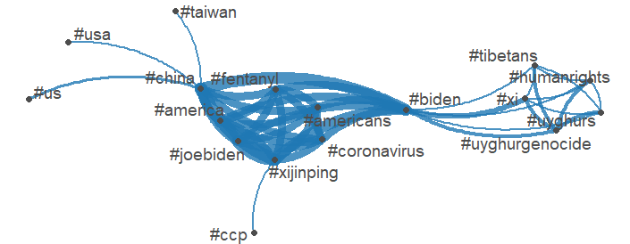
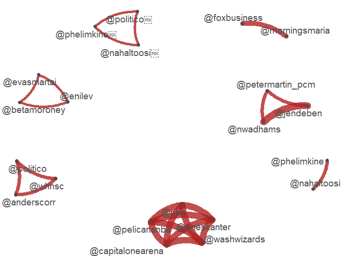
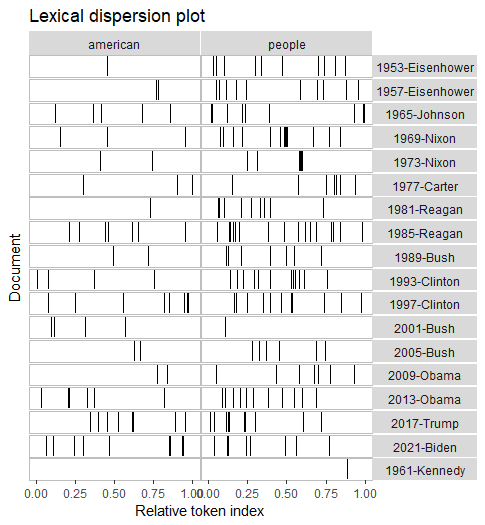

1 + 1[1] 2Master’s student in UT Dallas’ Applied Cognition and Neuroscience program.
Contact: mariam.aladsani[at]utdallas.com
Assignment 8: Spatial Data
The purpose of this assignment was to learn spatial data to learn the median age in the USA using the 2019 US Census Data. We start doing so by downloading the tidycensus and tigris packages. After downloading said packages, we can start observing the variables in our census dataset that will ultimately dictate the median age in each state. These variables account for sex, age, geography, among other important demographic information Additionally, access to US census data necessitates an API Key from Census API Data Service. After running, these vectors we can narrow our search to seek the median age data.
Before actualizing the data we run a plain map of the US:
Since we have the schematic of the map, we are now able to apply the demographic variables we already ran on a map, which captures all of our data. I first ran the code for the median age by state for 2019.
To compare data to the median age by state in 2009, I tweaked the year in the code and generated this map:
While, the map look like somewhat similar there are a few variable differences seen between 2009 and 2019, particularly in the Midwest where the median age is increasing. Regions like the east and west coast continue to maintain very similar demographics.
To compare further we I also tweaked the code to run the median age for the 2020 census data. Unfortunately, due to low-response rates the census just estimated the data. This is how it appeared in the console:
The regular 1-year ACS for 2020 was not released and is not available in tidycensus. ℹ Due to low response rates, the Census Bureau instead released a set of experimental estimates for the 2020 1-year ACS.
This assignment required us to download large data sets from government websites. Prior to downloading any of the data we reset the console to conserve memory. After resetting, we downloaded the purrr and magrittr packages.
I set the path to my desktop directory. After completing that, I downloaded congressional hearing datasets from 2021-2023 from https://www.govinfo.gov/app/search/ . After downloading, I was able to download and the organize the data on RStudio.
RStudio was also able to organize other variables of the data set in the Data tab.
The values set allows to see how long the dataset took long to load, in this case it took 9 seconds. We were also suggested to look at other storage methods like: Arrow, Feather, and Parquet. Arrow is a storage method that is able to hierarchically organize data on modern hardware. Feather is able “to read and write feather files,” at “maximum speed.” Lastly, Parquet similar to feather also manages columnar storage datasets, other than it also runs on Python. ## Assignment 6: Webscraping/textmining
For this project we webscapred Martin Luther King’s “I Have A Dream Speech,” using a text mining script. The text mining scipt downloads the “htmlTreeParse” function which allows to break down the article and ultimately process different vectors like punctuation, paragraphs, and word-frequency; which I’ll talk about a little bit later.
Once we install the necessary packages like XML, wordcloud, RColorBrwer, NLP, tm, and quantenda, we process the speech as an html document. This makes it easier to sparse through. As seen in the image below, the speech is now processed as an html document on RStudio.

Following this procedure we start vectorizing the words in the document and we then run the words.corpus too. Both the words.vec and words.corpus are seen in the data section of RStudio, and reveal the language, content, length, as well as other features in MLK’s speech.
-01.png)
We run other elements of words.corpus like removing punctuating and numbers to make it easier to analyze the text. Running TermDocumentMatrix, processes minuscule elements of the speech like integers and characters, this tool is helpful for the generation of wordcloud later. After the intial run of TermDocumentMatrix we can no analyze more broader parts of the text like word count, which can be seen in the picture below.

We can finally generate a wordcloud of MLK’s “I Have A Dream,” speech, that displays the most frequent words used.

Dr. Ho, then showed me how to play around with word frequencies. We were able to generate a wordcloud with words that were only mentioned once in the speech. As seen, the wordcloud becomes much more diverse.

In this assignment we were asked to analyze Biden-Xi summit that took place in November 2021. During this summit, Biden and Xi discussed China’s domestic policies, trade relationships, and security issues regarding the Asian region (Politico). For this assignment, we used the R alongside a Quantenda package to scrape and analyze Twitter data on the day of the summit. The twitter data analyzed displayed activity ranging from interactions, trending hashtags, popular users that were tagged, and prominent rhetoric on the day of the summit.
This is the summary of data:
The most popular hashtags on that were” #china”,” #joebiden”,” #xinjinping”, and “#america”. Other popular hashtags were “#usa,” “#breakingnews,” and “pray4america.” Quantenda data also pulled other popular hashtags from twitters among the ones not notes above are: “#uyghurgenocide,” “#uyghur,” “#humanrights,” “tibetans,” “taiwan,” “#coronavirus,” and interestingly enough “#fentanyl.” This plot shows how the variety of hashtags were used, and their connection with one another.

The Quantenda data allowed us to look at the 20 top users that were featured on the data matrix. The five top users mentioned were @POTUS, @JoeBiden, @Politico @EnesKanter, and @jendeben. The accompanying plot displays the interaction between various twitter users.
-04.png)

Another data point was analyzing lexical dispersion of US Presidents from 1953 to 2021. This plot ranged from 1953 when president Eisenhower was in office to current president Joe Biden. There is a lexical dispersion plot aimed to account for the frequency of times that presidents have used the term ‘american,’ in their speeches. In the plots this accounted for by referring to the term ‘relative token index.’ There is a wide variation of frequency among the US presidents, but according to the plot the use of the term does seem to slight increase around 1993 when Clinton was in office.

The second part of the lexical dispersion plot was comparing the frequencies between the words “american,” and “people.” The word “people,” showed less variation among presidents and was used quite frequently among all of them.

Lastly, we were asked to discuss Wordfish it. Wordfish analyzes positions of documents based on word frequencies. They do so by using a one-dimension scaling model.
I examined that number of searches for ‘Trump’ following the announcement of his election on June 6th 2015 for the 2016 US Election, up until 2023. I also examined the searches for ‘Biden’ following the same dates as my previous search.
In October and November 2016 there was a spike in searches for ‘Trump,’ coinciding to the election date. There was another sharp peak in ‘Trump,’ searches in October and November 2020. The search item ‘Biden’ was at its peak between the years of 2015 and 2023 in November 2020 during the election. Following the November 2020 election there was still more searches for ‘Biden,’ compared years 2015-early 2019, but not as frequent as the years of 2019 and 2020. The term ‘Election’ has a varied number of searches over time. The highest peaks being November 2016 and November 2020. There was a sharp dip of searches after January 2021, with some peaks in the searches in early to mid 2023.
All of the searches were exclusive to Google trends in the United States.
Analysis of survey:
Q2a. The survey is structured in a way where questions concerning the content is presented before the demographic information is asked.
Q2b. The questionnaire is composed of an array of different questions, that range from binary answers like yes or no to Likert scales questions. The survey also includes questions that have logic, this always questions to be followed up or skipped based on questions with binary responses.
Q2c. The questions are ordered so that the survey questions are presented first and the demographics are placed last.
Q7. One way to improve a respondent’s experience is to break up the survey into sections to maintain cohesion and synchronicity throughout the survey.
1 + 1[1] 2